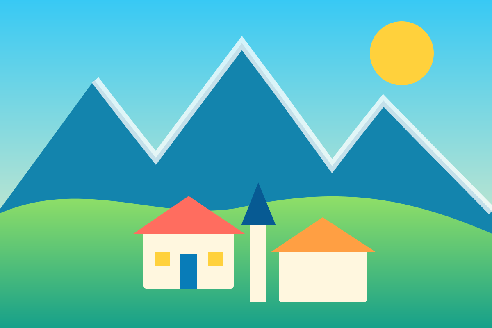

Alpages et randonnées
Balades familiales, observation de la faune et sorties accompagnées.
Préparer une sortie →Village des Aravis
Un village savoyard entre le col des Aravis, les alpages et le domaine skiable accessible depuis Le Plan.

L’esprit du village
La Giettaz constitue un point de départ naturel vers Le Plan, le Torraz, les alpages et le col des Aravis. Le guide met en avant le caractère local du village sans se présenter comme un site officiel.
Votre deuxième vidéo
Vidéo fournie pour le site. L’ouvrir sur YouTube.
Balades familiales, observation de la faune et sorties accompagnées.
Préparer une sortie →Le secteur de La Giettaz au sein des Portes du Mont-Blanc.
Découvrir le domaine →Restaurants, patrimoine, rencontres et pauses au col.
Voir les adresses →